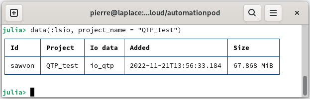
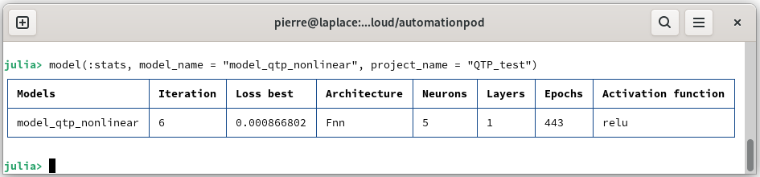
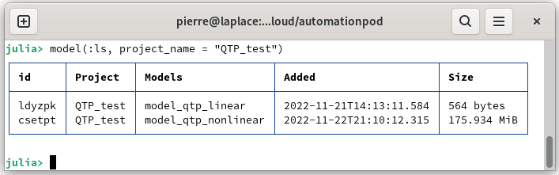

Tune your first model
From the data added in the database, you can identify the dynamic system and thus obtain a model. This model can be linear or non-linear according to your selection. Furthermore, there are different methods to tune the model parameters while optimizing the hyperparameters. In this tutorial you will learn:
Prepare the data
Launch AutomationLabs on Julia:
julia> using AutomationLabsCreate a project, if not already created:
julia> project(:create, name = "QTP_test")Load the data from a quadruple tank process [1] on the repository data. The data of the dynamical system inputs can be added (you can have a look on Manage your first data):
julia> data(
:add;
project_name = "QTP_test",
path = "paht_of_the_CSV_file",
name = "data_inputs_m3h",
)The outputs of the dynamical system can be added to the database:
julia> data(
:add;
project_name = "QTP_test",
path = "paht_of_the_CSV_file",
name = "data_outputs",
)Create the io data with bound on the raw data:
julia> lower_in = [0.2 0.2 0.2 0.2 -Inf -Inf]
upper_in = [1.2 1.2 1.2 1.2 Inf Inf]
lower_out = [0.2 0.2 0.2 0.2]
upper_out = [1.2 1.2 1.2 1.2]
data(:io;
inputs_data_name = "data_inputs_m3h",
outputs_data_name = "data_outputs",
project_name = "QTP_test",
data_name = "io_qtp",
data_lower_input = lower_in,
data_upper_input = upper_in,
data_lower_output = lower_out,
data_upper_output = upper_out,
)You can list the data from the project:

Tune a linear model
We can now tune the first model. We will perform the identification of the dynamic system by a linear model, such as:
julia> model(:tune;
project_name = "QTP_test",
model_name = "model_qtp_linear",
io = "io_qtp",
model_architecture = "linear",
computation_solver = "lls",
)where, project_name is the project where the model will be saved, model_name is the name of the model after tuning, io is the data used for dynamical system identification and model_architecture allows you to select the type of model. So, for a linear model, it is model_architecture = "Linear".
You can list the model available on the database:
julia> model(:ls, project_name = "QTP_test")
Tune a non linear model
It possible to tune a non-linear model for dynamical system identification, such as:
julia> using Dates julia> model(:tune;
project_name = "QTP_test",
model_name = "model_qtp_nonlinear",
io = "io_qtp",
computation_solver = "radam",
computation_maximum_time = Dates.Minute(15),
model_architecture = "fnn",
)where, computation_maximum_time is the time allocated for tuning with the hyperparameters optimization and it requires Dates package. model_architecture allows you to select the type of model. So, for a non-linear model with a feedforward neural networks, it is model_architecture = "Fnn". For example, it is possible to set other parameters, more information can be found in the guides section:
It is possible to present information about the best tuning model:
julia> model(:stats, model_name = "model_qtp_nonlinear", project_name = "QTP_test")
You can list the models available on the database:
julia> model(:ls, project_name = "QTP_test")
Delete the models
It is possible to delete the tuned models, such as:
julia> model(:rm, project_name = "QTP_test", model_name = "model_qtp_nonlinear")julia> model(:rm, project_name = "QTP_test", model_name = "model_qtp_linear")Reference
[1] Blaud, P. C., Chevrel, P., Claveau, F., Haurant, P., & Mouraud, A. (2022). ResNet and PolyNet based identification and (MPC) control of dynamical systems: a promising way. IEEE Access.